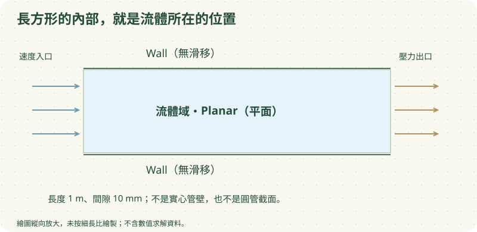

觀念筆記2024 R2
流體到底在哪裡流？先把流體域找出來
用平行板通道看懂流體域、入口、出口、壁面，以及速度剖面為什麼會彎起來。
文件查證／待實機驗證
開始前
- 知道速度、壓力與黏度的基本單位
學習目標
- 辨認速度入口、壓力出口與無滑移壁面。
- 理解平面平行板流和圓管流的差別。
- 知道殘差、守恆與物理量穩定要一起看。
核心觀念：先決定空間與邊界
圖解這塊長方形，就是流體域

⤢ 放大圖解01
Velocity Inlet（速度入口）
在左邊指定進入流體域的速度。
02
Pressure Outlet（壓力出口）
在右邊指定出口靜表壓；0 Pa 不是絕對真空。
03
Wall（壁面）
上下固定壁面採 No Slip（無滑移），壁面速度為零。
Fluent 在網格上求解質量與動量等守恆方程。本文先用穩態、不可壓縮、牛頓流體與層流模型；不加入熱傳、多相或湍流來增加不必要的變因。
範例：看看充分發展的速度剖面
充分發展表示沿主流方向，剖面形狀不再改變，不是「流體不動」。這裡的解析模型是兩個很寬平行板之間的平面層流，中心速度為平均速度的 1.5 倍。
先玩再懂 / ANALYTIC PLAYGROUND
解析／概念流速與間距，怎麼改變剖面？

中心速度—m/s
Re（Dh）—
壓降／長度—Pa/m
均勻牛頓流體、充分發展平行板層流解析式。ρ = 998.2 kg/m³、μ = 0.001003 Pa·s、Dh = 2H；不含入口發展段。粒子用示意慢放，不是 Fluent 求解動畫。 查看依據 ↗
圖解壁面慢、中心快：拋物線剖面
⤢ 放大圖解開始前的選擇
- Planar（平面）與 Axisymmetric（軸對稱）不能混用；本例是 Planar。
- 入口均勻速度會形成發展段；要在下游檢查是否已充分發展。
- Reynolds Number（雷諾數）必須寫清楚採用的特徵長度；本例用 Dh = 2H。
- 材料密度與黏度要對應指定條件，不能只接受預設 air（空氣）。
常見誤解
💡 出口設定 0 Pa，通道裡的絕對壓力就是零嗎？
不是。Pressure Outlet（壓力出口）這裡設定的是表壓；絕對壓力還要加上 Operating Pressure（操作壓力）。
重點整理
- 先辨認流體域與邊界，再選物理模型。
- 分清平面通道與圓管的解析參考。
- 解析式只適用於指定假設，不拿來套任何流場。
參考來源
以下來源用於技術查證；案例尺寸與初始網格是本教學自訂設定。原廠頁面可能依存取權限要求登入。
- ANSYS Fluent User’s Guide — Boundary Conditions ↗2024 R2 · 速度入口與壓力出口的物理意義及輸入項目。
- ANSYS Fluent in Workbench — Introduction ↗2024 R2 · Workbench–Fluent 工作流程、材料與邊界、求解及後處理；本文通道參數另訂。
- NPTEL — Viscous Incompressible Flow: Internal Flow ↗流體力學理論，非軟體版本限定 · 平行板 Poiseuille 充分發展層流的拋物線剖面、壓降與 1.5 倍中心速度。